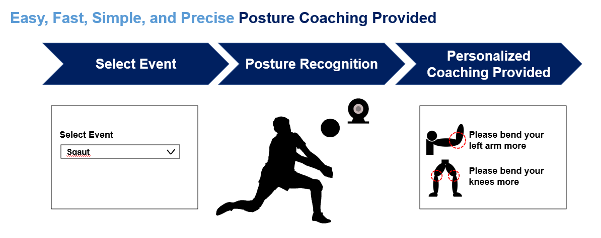
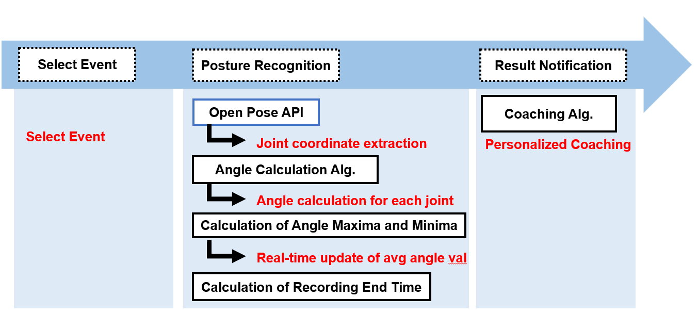
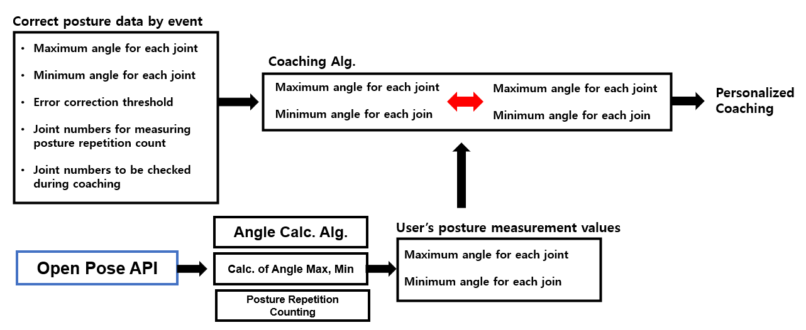
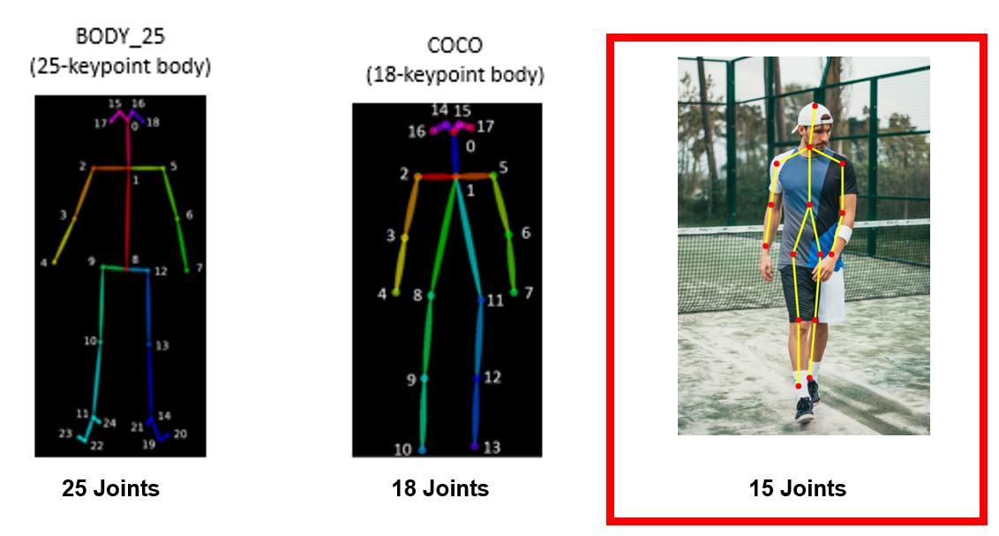
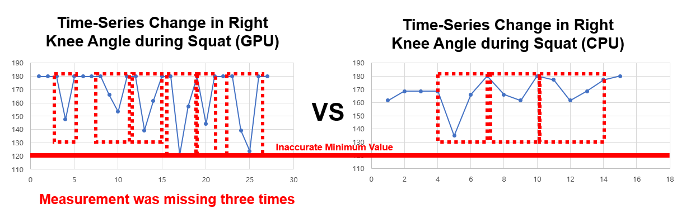
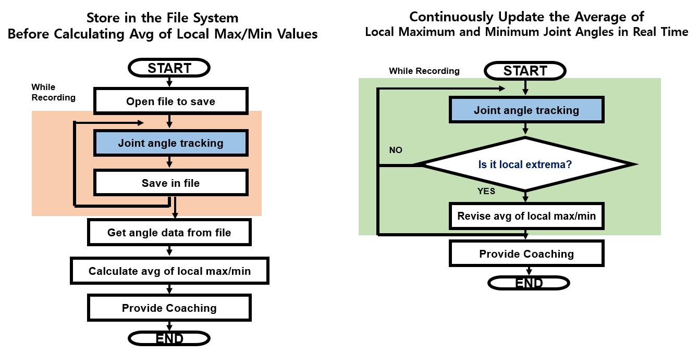
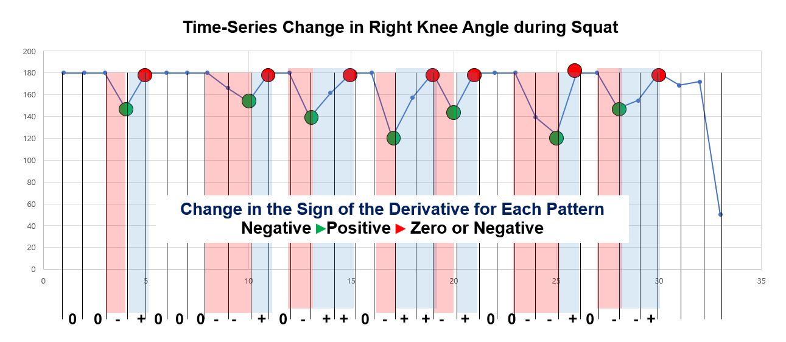
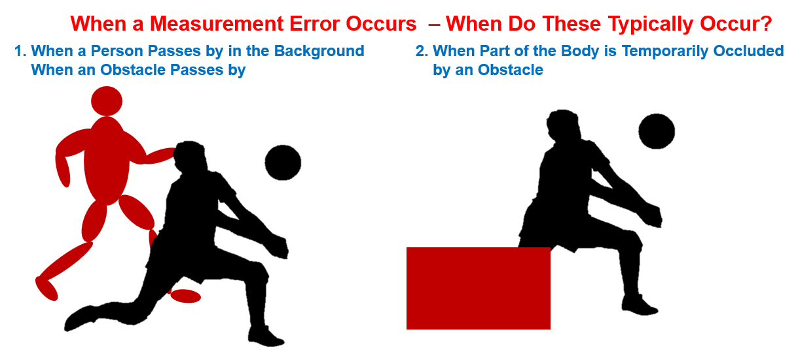
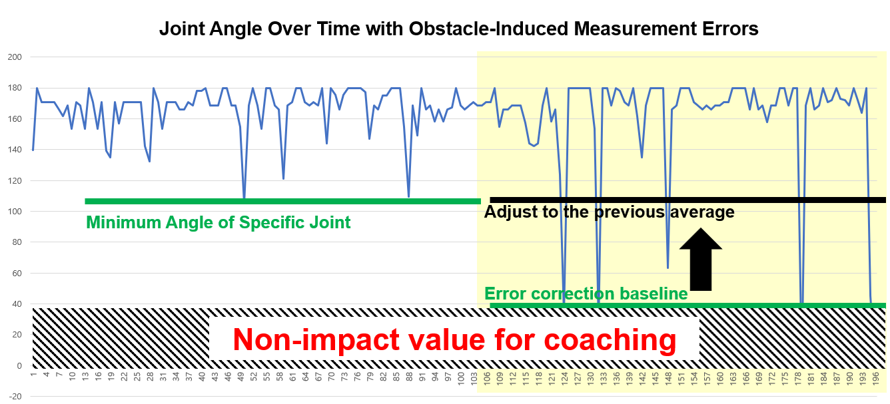

Easy Coach 2022
! Code will be uploaded to GitHub soon !
This post is an expanded version of my 2022 project presentation, incorporating the development process in more detail(including troubleshooting).
Why I started this project
From 2019 to 2022, normal outdoor activities became difficult due to the COVID-19 pandemic, which claimed countless lives. To prevent the spread of the virus, the government advised people to stay at home, making it hard to meet others in person. The decline in social activities was a problem, but an equally serious issue was the deterioration of people’s health caused by the lack of outdoor physical activity.
To address this, the government and health experts encouraged people to maintain their health through indoor exercise, also known as home training. However, unlike physical education classes at school or workouts at the gym, there were no instructors or trainers at home to correct one’s posture. Proper posture requires personalized coaching.
While some personal coaching devices do exist, they are often high-end equipment used by professional athletes, involving numerous sensors attached to the body — far too expensive and impractical for the general public.
To solve this problem, I initiated a project called Easy Coach — software that provides posture coaching using only a computer’s built-in camera, offering a simple and affordable way for anyone to receive exercise guidance.
What Easy Coach can do
Simply speaking, Easy Coach provides individual coaching in a way that is easy, fast, simple, and precise. Since it is designed for the general public, Easy Coach places a strong emphasis on ease of use. Users only need to select an exercise and perform it in front of the camera built into their laptop — personalized coaching will then be provided instantly.
Main Coaching Algorithms
Overview
 What data should be collected?
- Squats
- Push-ups
- Lunges
- Shoulder Press
- Overhead Tricep Extensions
The exercises in the above list share two key characteristics. First, they are all home workouts that can be done indoors, and for them to be effective, the angles of certain body parts are important. In other words, to perform the exercises correctly, specific joints must be bent beyond or below certain angles. Second, each exercise can be broken down into discrete movement phases, which are repeated continuously.
Easy Coach needs to determine which movement phase of which exercise the user is currently performing, and based on this, provide coaching to ensure correct form. But how can we identify which movement phase the user is in? We need to know the criteria that separate one movement phase from another in a given exercise.
While I am not a sports major, it is clear that in most home workout postures, the boundary between two movement phases coincides with a local extremum in the joint-angle vs. time graph for certain joints. This means we can determine the current phase and the number of repetitions by identifying these extrema. Such joint-angle vs. time graphs can be obtained using the OpenPose API (explained in more detail later).
So, at which points should we base our coaching? Think of a gym: coaches often give advice about joint angles at specific phases and about the time taken between phases. (For example, in weight training, it is known that lifting slowly while feeling the weight is more effective for strength building than lifting quickly.)
As mentioned earlier, we can obtain a joint-angle vs. time graph for each joint while recording the user’s movements. From the extrema in these graphs, we can measure the time between phases, and from the joint angles at these extrema, we can determine the joint positions at the phase boundaries. In other words, the data we need to extract from the joint-angle vs. time graph are:
- the joint angles at extrema,
- the time intervals between extrema (movement speed), and
- the repeating pattern of extrema (number of repetitions).
What is OpenPose and how to calculate angles?
OpenPose is an open-source library developed by the Carnegie Mellon Perceptual Computing Lab that can detect and track human body keypoints—such as joints, limbs, and facial landmarks—from images or video in real time. It uses deep learning–based computer vision models to estimate a person’s pose by outputting the 2D coordinates of these keypoints. This allows applications like motion analysis, gesture recognition, fitness coaching, and animation to be built without requiring wearable sensors.
I used an API that returns the coordinates of 15 joints. By selecting any three joints, we can form a triangle. Since we know the coordinates of these three points, we can calculate the length of each side of the triangle. Using the law of cosines, we can easily determine the cosine value of each angle, which is convenient because the angle is always between 0 and π.
Calculating maximum and minimum angles
To provide coaching, a representative value of the user’s posture needs to be determined after recording. This raised an important question: should we calculate this representative data during recording or after recording? Initially, I tried calculating the maximum and minimum joint angles after recording, but I found that memory overflow occurred just about two minutes into the recording.
The issue was that the program had to store the angle values for every joint in every frame, which quickly became too large to fit into memory. I then attempted to save this data to the file system instead. However, this introduced another critical problem: file input/output operations are relatively slow. Since my program wrote data to a file on every frame, each frame took too long to process, which made it impossible to accurately capture local maximum and minimum values for each angle.
To address this, I took a different approach — calculating during recording. For the representative data, I used the average of the local maximums and minimums. Since only local maximum and minimum values are needed, the program simply adds data whenever a particular frame contains one of these points. Adding values and performing simple conditional checks take constant time in terms of time complexity, and the calculations are light enough that they don’t slow down each frame.
Local maxima and minima can be detected by checking when the sign of the derivative of the time–angle function changes. By leveraging this fact, I was able to identify these points in real time and resolve the performance issues.
An algorithm for identifying which specific exercise movement the user is performing
To provide coaching, an algorithm is required to determine which repetition of which exercise movement the user is performing and how many repetitions have been completed. As mentioned above, this can be achieved based on the repetition pattern of extrema.
For example, in the case of squats—one type of home workout—the graph below shows the measured angle of the right knee joint over time during a squat. Differentiating this graph reveals that the sign of the derivative repeatedly forms a pattern of negative → positive → zero or negative (see the color change pattern).
Exercises with consistent, repetitive motions, such as home workouts, display patterns similar to those of squats. The algorithm uses this repetition pattern of extrema to determine the progress and count of the user’s movements. This enables the system to automatically decide when to stop recording and to identify which specific repetition of an exercise movement a measured extremum corresponds to.
Algorithms for More Accurate Coaching
Causes of coaching inaccuracies
While beta testing Easy Coach, I found that measurement errors from the OpenPose API occurred frequently. This was largely due to filming in the confined space of a home environment, where numerous surrounding objects interfered with skeleton detection. These sources of measurement error can be broadly classified into two categories:
- When there is another person or a moving obstacle behind the user (for example, at home a family member might walk by, or a box might suddenly fall).
- When part of the body is blocked by an obstacle (for instance, during a workout at home, a small bookshelf in front of the camera might prevent the full body from being detected).
Since these situations occur frequently, I realized the need to design a separate algorithm to compensate for them and improve accuracy.
Discarding Inaccurate Measurements
In the OpenPose API, if the angle of a specific joint cannot be measured, the angle is represented as “-1”. This value indicates missing data, and any data obtained from frames containing “-1” is discarded to ensure it does not affect coaching.
However, the real problem arises when an obstacle—rather than the user—is mistakenly recognized as part of the user’s body, resulting in an incorrect angle measurement. Since this value falls within the actual range of 0–180 degrees (and not “-1”), it is difficult to identify it as an error based solely on the number itself. Determining whether such a value is incorrect requires examining both its relationship to previous and subsequent values and whether the value is physically plausible for the human body. To address this, the Easy Coach program uses the following two criteria to detect erroneous measurements:
- Criterion 1: If the measured angle of a joint is smaller than the lower limit defined for that joint in a given exercise, the frame is classified as containing an erroneous measurement.
- Criterion 2: If the change in angle between consecutive frames is significantly large (based on the derivative of the angle–time graph), the value is treated as an error.
For Criterion 1, repeated observations of obstacle-induced misrecognition revealed that the affected joint was often measured at an abnormally low angle. Therefore, for each exercise type, an error correction threshold was defined—representing the lower bound of angles considered physically valid for each joint. If a joint angle falls below this threshold, the frame is deemed erroneous, and the value is replaced with the average from the user’s previous valid data.
Criterion 2 identifies errors when the detected movement speed is physically unrealistic for the human body. The use of the derivative (rate of change) from the previous measurement as the benchmark is straightforward to understand. For example, imagine a user lifting a dumbbell with one hand during a home workout. Is it realistic for the user to lift the dumbbell slowly at first and then suddenly accelerate the movement drastically midway? In most cases, such abrupt changes in joint angular velocity are physically implausible. Hence, this became the basis for error detection.
As a result, erroneous measurements are automatically corrected, enabling far more accurate coaching outcomes.
Feedback from Specialists
Thankfully, I had the opportunity to present this project to Jaeman An, CEO of VESSEL AI, Youngju Lee, Professor in the Department of Artificial Intelligence Software at Korea Polytechnics University, and Hyeong Min Lee, a researcher at Yonsei University. I received two main pieces of feedback:
(1) the importance of UI design and the need to add engaging features—such as gamification elements—to attract and retain users
(2) the necessity of researching whether similar ideas already exist before launching a startup. This research not only helps defend one’s own idea but can also lead to new insights.
It was a valuable opportunity to learn, from active professionals, what must be considered when transitioning a solution into an actual product from a startup operation perspective.